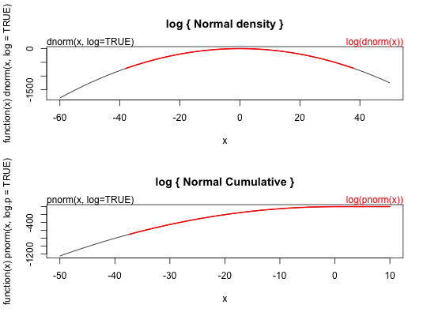

A normal function without HTML output
normal(n, mean = 0, sd = 1)
require(graphics) dnorm(0) == 1/sqrt(2*pi)#> [1] TRUEdnorm(1) == exp(-1/2)/sqrt(2*pi)#> [1] TRUEdnorm(1) == 1/sqrt(2*pi*exp(1))#> [1] TRUE## Using "log = TRUE" for an extended range : par(mfrow = c(2,1)) plot(function(x) dnorm(x, log = TRUE), -60, 50, main = "log { Normal density }") curve(log(dnorm(x)), add = TRUE, col = "red", lwd = 2) mtext("dnorm(x, log=TRUE)", adj = 0) mtext("log(dnorm(x))", col = "red", adj = 1) plot(function(x) pnorm(x, log.p = TRUE), -50, 10, main = "log { Normal Cumulative }")curve(log(pnorm(x)), add = TRUE, col = "red", lwd = 2)mtext("pnorm(x, log=TRUE)", adj = 0)mtext("log(pnorm(x))", col = "red", adj = 1)## if you want the so-called 'error function' erf <- function(x) 2 * pnorm(x * sqrt(2)) - 1 ## (see Abramowitz and Stegun 29.2.29) ## and the so-called 'complementary error function' erfc <- function(x) 2 * pnorm(x * sqrt(2), lower = FALSE) ## and the inverses erfinv <- function (x) qnorm((1 + x)/2)/sqrt(2) erfcinv <- function (x) qnorm(x/2, lower = FALSE)/sqrt(2)